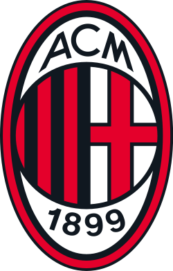
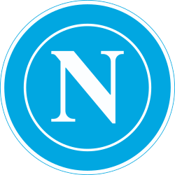
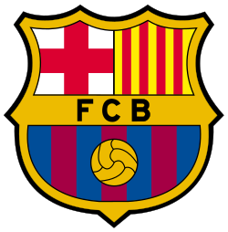
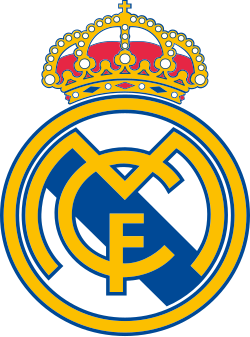
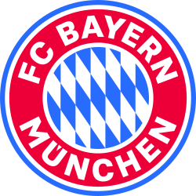
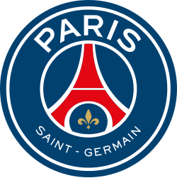
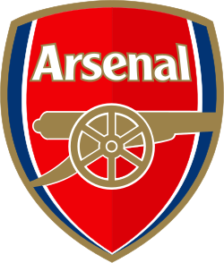
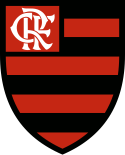

Le regole
fuori dal campo.
Indovina la Squadra è un quiz gratuito e senza pubblicità. Qui trovi da dove arrivano i dati, a chi appartengono gli stemmi e come vengono trattate le tue preferenze.








Stemmi
e marchi
Gli stemmi dei club sono marchi registrati e opere protette dai rispettivi proprietari. Le immagini sono tratte dalle pagine di Wikipedia e vengono mostrate esclusivamente per identificare le squadre all'interno del quiz.
Nessun club, lega o federazione ha sponsorizzato, approvato o collaborato a questo progetto. I diritti restano interamente dei rispettivi titolari.
Se sei titolare dei diritti di un'immagine e desideri segnalarne la rimozione, scrivi aprendo una issue sul repository GitHub: il contenuto verrà rimosso o sostituito tempestivamente.
Dati
sui giocatori
Nomi, nazionalità, età, ruoli, numeri di maglia e club attuali sono ricavati dalle voci di Wikipedia in inglese, con aggiornamento a novembre 2026 e stagione di riferimento 2026/27.
Il calcio cambia in fretta: un trasferimento o un prestito può non essere ancora riportato. Il club mostrato come risposta corretta è quello indicato dalla fonte al momento dell'aggiornamento.
Font
e tecnologia
Il sito usa Anton, Bricolage Grotesque e Instrument Serif, distribuiti da Google Fonts con licenza SIL Open Font License. Le uniche risorse esterne caricate dalla pagina sono i font.
Il gioco è statico: nessun server applicativo, nessun database e nessun account. Non ci sono cookie, analytics o pixel di tracciamento.
Privacy
e preferenze
Nomi dei giocatori, numero di partecipanti, difficoltà e preferenza audio vengono salvati solo nel localStorage del tuo dispositivo, così la prossima partita parte già pronta. Puoi cancellarli in qualsiasi momento svuotando i dati del sito dalle impostazioni del browser.
Le richieste a Google Fonts comportano la trasmissione dell'indirizzo IP a Google, come per qualsiasi risorsa esterna. Nessun dato della partita viene inviato altrove.
Codice
e contatti
Il progetto è open source su GitHub. Segnalazioni, correzioni sui trasferimenti e richieste di rimozione possono essere aperte nella sezione Issues del repository.
Identità grafica, testi e codice del gioco sono originali. Gli stemmi restano dei rispettivi club.